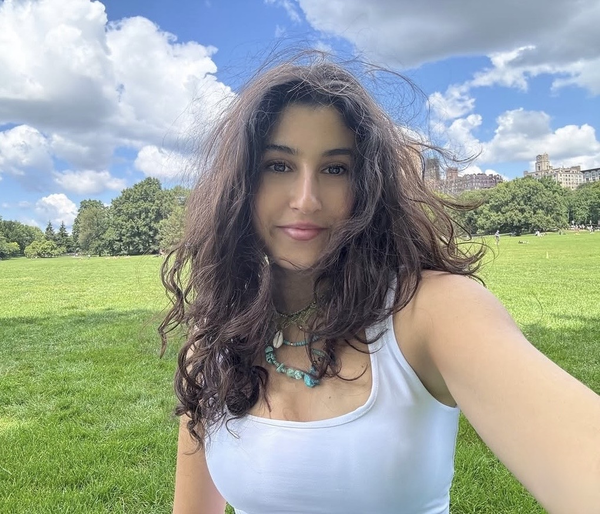

❀Since childhood, I have been drawn to observing and making sense of the different worlds people inhabit within the same shared reality. I experience this curiosity most strongly through visual observation, often paying attention to how images, spaces, and moments communicate meaning without words. I am especially interested in how visual media can quietly influence perception and emotion without requiring explanation. Different universes, different lives, families, social structures, values, emotions, ideas, and ways of feeling have always fascinated me. I consistently question what kinds of powerful elements are capable of creating a shared perception strong enough to connect these vastly different worlds, or at least capture collective attention. This curiosity leads me to consider why a compelling advertisement can make people stop and stare, almost mesmerized, or how media content shaped by trends and data manages to hold attention on a global scale. At times, without any clear explanation, a single photograph can draw us in and allow us to experience a full range of emotions. I began this journey in search of the meanings behind the aesthetic reflections of our inner worlds, and the invisible forces that shape how we see, feel, and class
In this course, I want to explore visual communication as a way of understanding inner worlds and emotional experiences. I am interested in how aesthetics, design, and visual structure can shape feelings, trigger memory, and influence perception on a psychological level. Rather than seeing design only as a visual tool, I want to approach it as a language that gives form to emotions that are often difficult to express verbally. Through photography, digital media, and web-based projects, I hope to discover how different visual choices can create new dimensions of meaning and open alternative perspectives. This process is important to me because I see visual media as a space where inner experiences, emotions, and personal narratives can be transformed into something tangible, shared, and emotionally resonant.